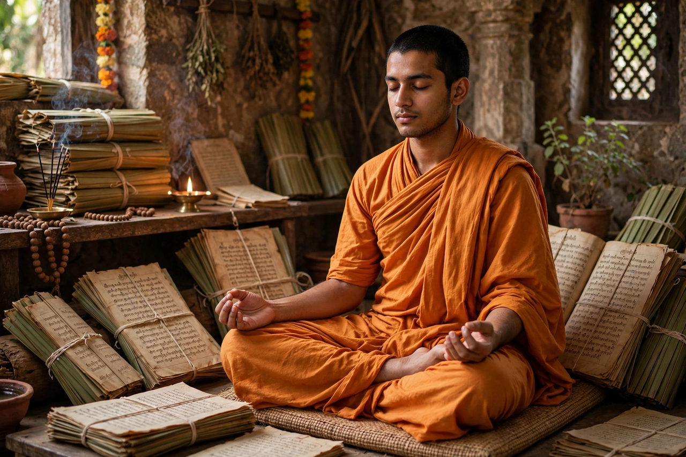

Adi Shankara
Adi Shankara (Sanskrit: आदि शङ्कर, IAST: Ādi Śaṅkara; c. 788–820 CE, dates debated), also called Shankaracharya, was an Indian philosopher and theologian who consolidated the doctrine of Advaita Vedanta, the school of non-dualism holding that the self (atman) and ultimate reality (Brahman) are one. Travelling across India in a life traditionally reckoned at only 32 years, he wrote influential commentaries (bhashyas) on the Upanishads, the Bhagavad Gita, and the Brahma Sutras, debated rival schools, and is credited with founding monastic centres (mathas) at the four cardinal points of India.

| Adi Shankara | |
|---|---|
| Born | c. 788 CE, Kaladi, Kerala (traditional) |
| Died | c. 820 CE, Kedarnath (traditional) |
| Era | Early medieval Indian philosophy |
| School | Advaita Vedanta |
| Teacher | Govinda Bhagavatpada |
| Notable works | Brahma Sutra Bhashya, Upanishad commentaries, Vivekachudamani (attributed) |
Life
Tradition places Shankara's birth at Kaladi in present-day Kerala, to a Nambudiri Brahmin family. A child prodigy, he mastered the Vedas young and sought permission to renounce the world; the famous story tells that a crocodile seized his leg while bathing, and his mother consented to his sannyasa so that the creature — an enchanted being — released him. He studied under Govinda Bhagavatpada on the banks of the Narmada, then travelled to Varanasi and across the subcontinent, debating Mimamsa scholar Mandana Mishra and others.
Philosophy
Shankara taught that Brahman — pure, attributeless consciousness (nirguna Brahman) — alone is real; the world of plurality is mithya, neither fully real nor unreal, superimposed on Brahman through ignorance (avidya) associated with maya. Liberation (moksha) comes not through ritual action but through knowledge (jnana) of the identity of atman and Brahman, as declared in the great sayings (mahavakyas) such as tat tvam asi ("that thou art"). He distinguished standpoints of empirical reality (vyavaharika) and ultimate reality (paramarthika).
Institutions and legacy
Shankara is traditionally credited with founding four cardinal mathas — Sringeri (south), Puri (east), Dwarka (west), and Joshimath (north) — whose heads bear the title Shankaracharya, and with organising the Dashanami order of monks. His synthesis shaped Hindu philosophy for over a millennium and remains central to Vedantic thought, influencing figures from medieval commentators to Swami Vivekananda in the modern period.